① 컨셉 B (4컷 영상 완성 🟢): 인스타 속 풀 착장(트위드 자켓 + 블랙 골지 니트 소매/밑단 + 블랙 플리츠 미니스커트 + 블랙 니삭스 + 블랙 메리제인 구두)을 20대 초반 예쁜 모델이 입고 화보 촬영한 영상
② 컨셉 A (5컷): 인스타 사진 속 주인공 본인이 고급 한복 5종을 입고 화보 촬영하는 영상
1080 × 1920 · Google Flow (Veo 3.1 - Fast) 생성본
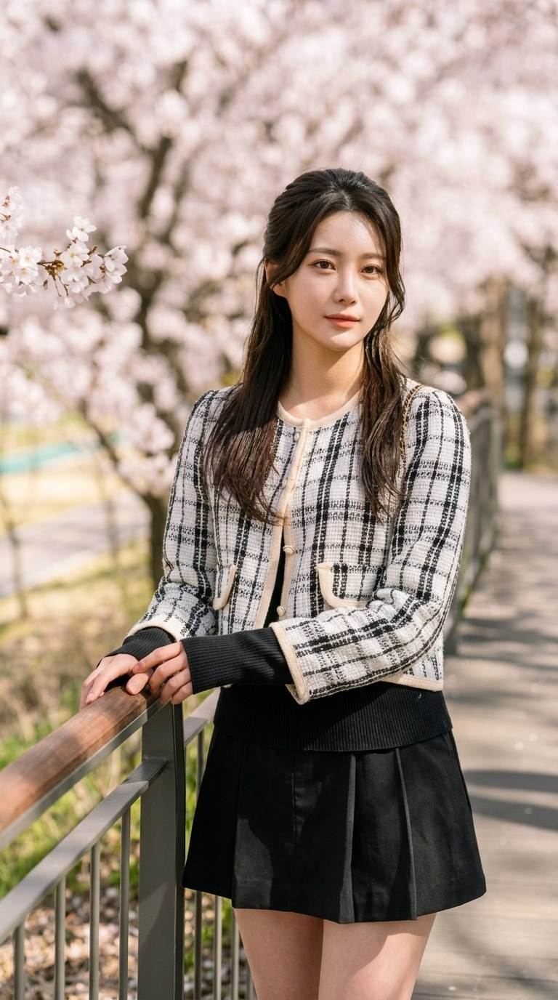
원본 첫 번째 사진과 동일한 구도에서 21세 모델이 난간에 두 손을 얹고 봄 햇살 아래 포즈를 취하며 미소 짓는 화보 영상입니다.
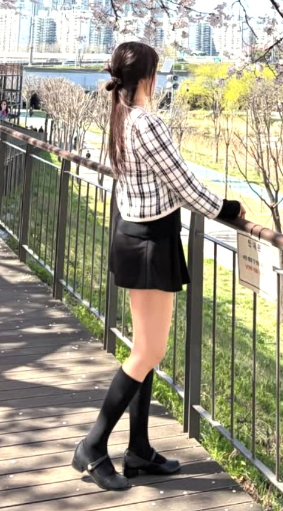
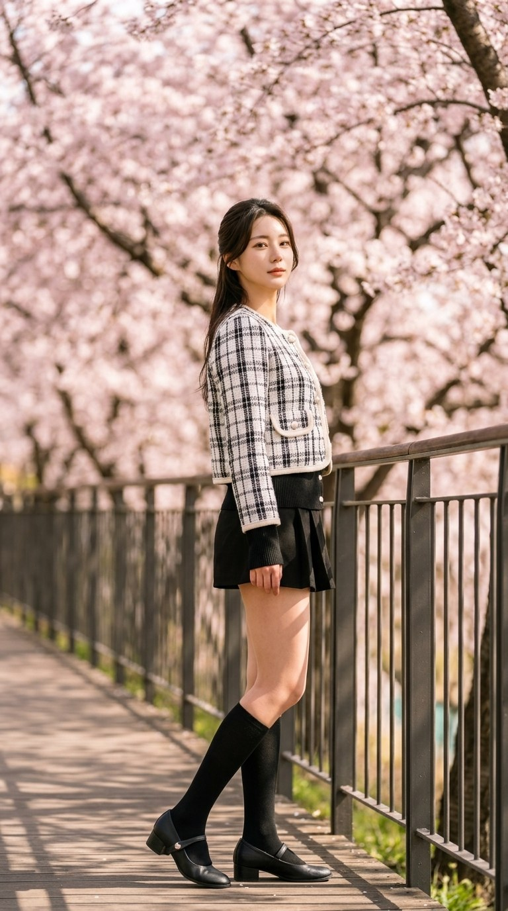
크롭 트위드 자켓, 블랙 니트 이너, 블랙 플리츠 미니스커트, 무릎 아래 블랙 니삭스, 블랙 메리제인 스트랩 구두까지 풀 착장을 보여주며 돌아보는 전신 화보 영상입니다.
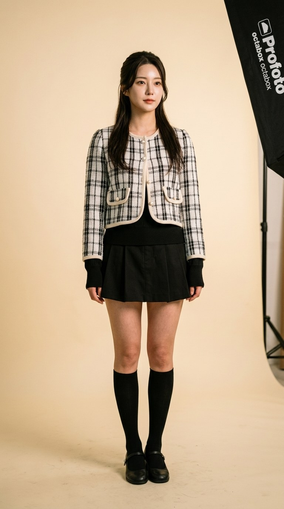
크림색 스튜디오 호리존에서 동일한 풀 착장을 입은 모델이 자연스럽게 포즈를 취하며 촬영하는 상업 패션 화보 영상입니다.
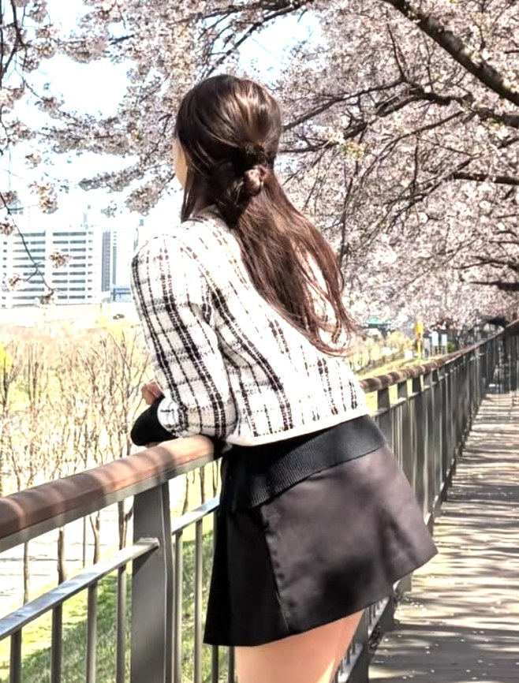
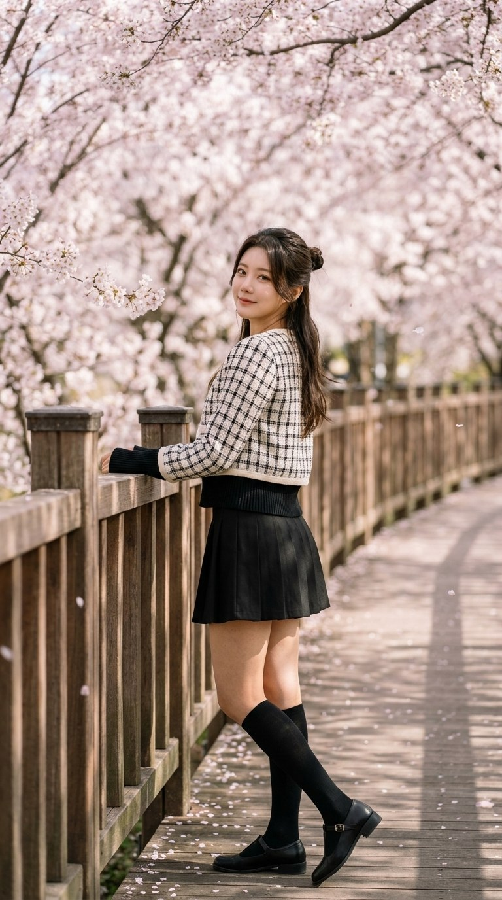
원본 세 번째 사진처럼 반묶음 미니 번 헤어와 풀 착장 뒷태를 보여주며 난간에 기대어 서서 카메라를 향해 고개를 돌려 미소 짓는 피날레 영상입니다.
아래 5컷의 완성된 키프레임으로 Google Flow(Veo 3.1 - Fast) 영상을 생성 중이며, 완료 즉시 이 페이지 URL에 영상이 자동 업데이트됩니다.
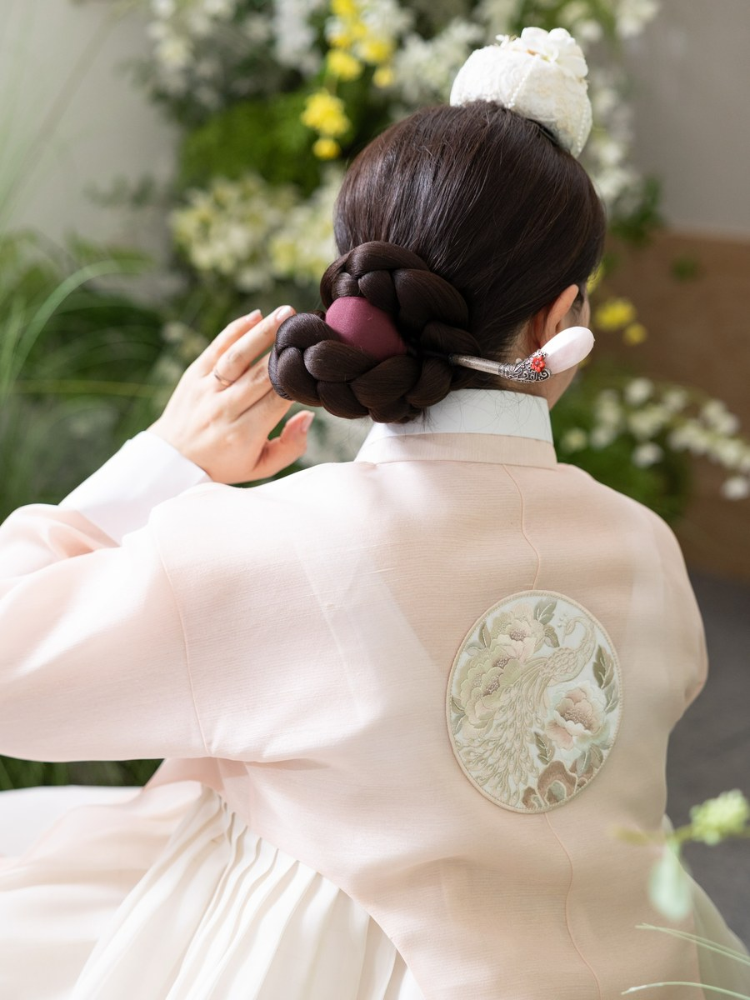
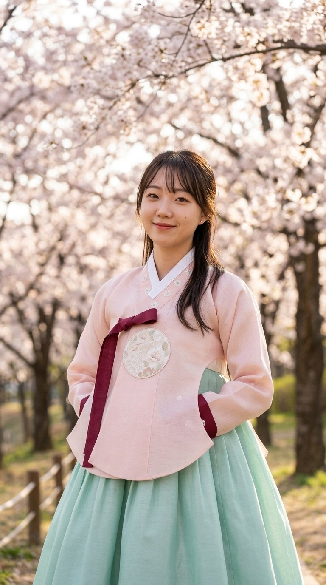
사진 속 주인공이 연분홍 실크 저고리(자주색 고름·끝동, 가슴 원형 자수 보)와 옥색 주름 치마를 입고 벚꽃 아래에서 미소 짓는 화보입니다.
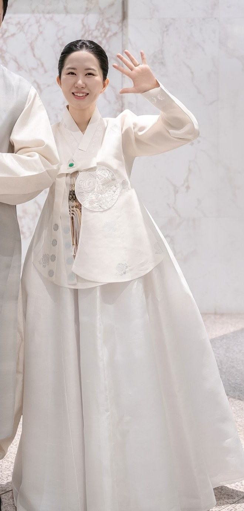
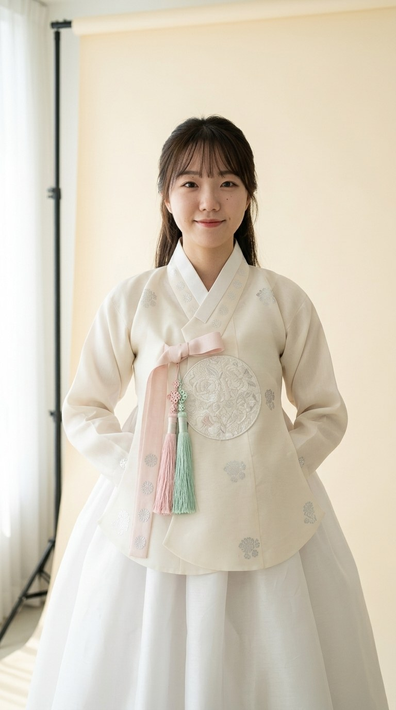
크림색 호리존 배경지 앞에서 아이보리 당의와 연분홍·민트 쌍노리개를 착용한 주인공이 단아하게 포즈를 취하는 스튜디오 화보입니다.
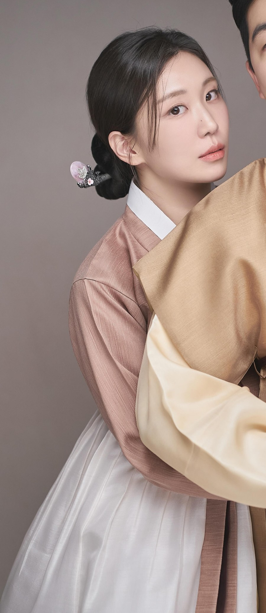
벚꽃이 만개한 한옥 처마 아래에서 연두빛 실크 저고리와 연보라 치마, 비취 노리개·옥가락지를 착용한 주인공의 봄 한복 화보입니다.
은은한 자연광이 들어오는 한옥 창호 문 앞에서 모카로즈 빛 명주 저고리와 백색 치마를 입고 보자기함을 안은 채 미소 짓는 화보입니다.
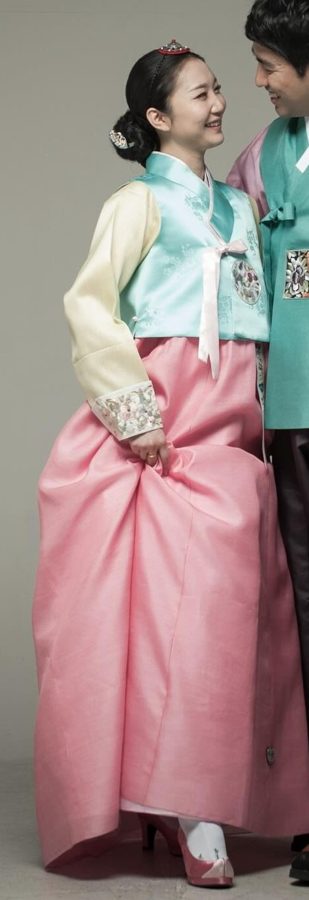
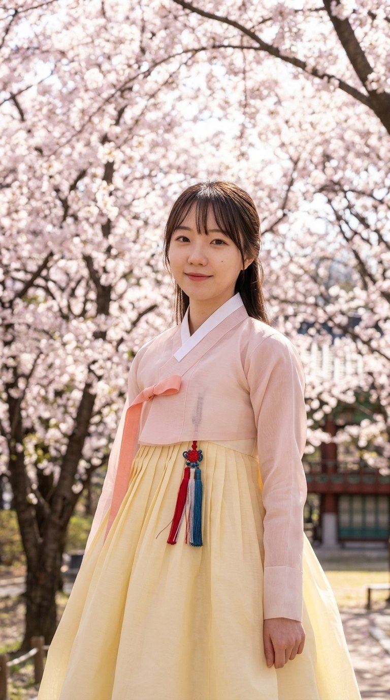
화사하게 핀 벚꽃 아래에서 연분홍 오간자 저고리와 삼색 노리개, 파스텔 버터크림 옐로우 치마를 입고 미소 짓는 피날레 컷입니다.